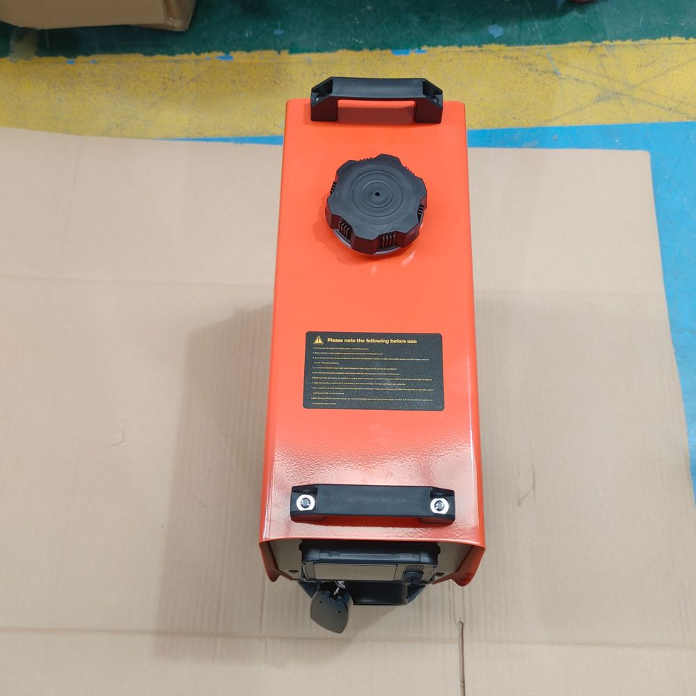

Bunk heaters, coolant heaters, diesel air heaters and portable units for Canadian trucks. High-quality heaters at prices that make sense for owner-operators and small fleets.
Designed for Canadian winters. Available in Canada.
Engine-off heatStop idling through your rest break
12 V systemsMatches North American trucks
Runs on dieselNo plug-in needed at the stop
GTA stockPickup or Canada-wide shipping
The northern night shift
Every driver north of the 401 knows these mornings.
−15°C and colder
Idling all night just to stay warm
A Class 8 truck at idle burns roughly 3–4 L of diesel an hour. Over a 10-hour break that adds up fast, adds engine hours, and runs into idling bylaws in many Ontario towns.
Oil thickens, batteries lose much of their cranking power, and the starter grinds. Every hard cold start wears the engine and puts your load behind schedule.
Your breath condenses on the sleeper walls and freezes. In the morning you scrape the windshield before you can pre-trip, and you pull out with a cold cab.
Four heaters. One job: keep you moving all winter.
Specs below are typical for each category. Exact output and draw depend on the model. Send us your truck details and we'll confirm the right unit.
Sleeper cabs · Overnight
Bunk Diesel Heater
Quiet, engine-off heat for your sleeper, running off your truck's own fuel tank.
The painTen-hour break at a lay-by, −30°C outside. Either idle all night and burn fuel, or shut down and wake up to frost on the bunk wall.
A compact 2 kW heater mounted under the bunk or in a side box keeps the sleeper at the temperature you set. Dry heat means less condensation, and a low-voltage cut-off shuts it down before your start batteries are at risk.
Warms your engine coolant before you turn the key, so the truck starts easily and the cab is warm from the first minute.
The pain5 a.m., −32°C. The starter groans, the oil is like molasses, there's no plug for the block heater, and dispatch is already calling.
Set the timer the night before. The heater circulates hot coolant through the engine and the truck's own heater core, so the engine turns over easily, the windshield defrosts, and you skip the long warm-up idle.
Water pump, fuel pump, hoses, T-fittings, exhaust, silencer, bracket
Cabs · Cargo · Service bodies
Diesel Air Heater
More output for bigger spaces: day cabs, cube vans, service trucks, equipment cabs and shops.
The painYour service truck or excavator cab turns into a freezer the moment you shut down, and your tools and hands are too cold to work.
A 5 or 8 kW forced-air unit heats a larger space fast and can be ducted to one or two outlets. It runs on diesel from the vehicle's tank or a separate tank, so it works wherever you are parked.
An all-in-one heater with its own 5 L fuel tank. Carry it to the truck, the trailer, the garage or the camp. Available in an upright body and a compact body.
The painA leased or borrowed truck you can't drill into. A breakdown on the shoulder. A jobsite trailer with no heat. You need warmth tonight, not an install appointment.
Set it outside or in a vented compartment, run the warm-air duct inside, and connect to 12 V or a wall outlet with the included adapter. The LCD controller clips off the unit, and the key-fob remote lets you adjust heat from the bunk. Twin fuel gauges show how much diesel is left.
Exhaust pipe, silencer, air duct, outlet vent, clamps
What you actually get
Complete kits in the box.
Upright portable + full kitCompact portable + full kitCoolant heater install kit

Fuel cap and carry handles
Why AutoCoolParts
High quality. Priced for the people who drive.
Big-brand heaters are good, and they carry big-brand markups. We stock heaters that do the same job in a Canadian winter, with complete kits and a local team that answers your messages.
Built for the cold
12 V units chosen for Canadian truck use, with thermostat control and low-voltage protection.
Complete kits
Exhaust, ducting, fuel line and controller in the box. No surprise add-ons at install time.
Matched to your truck
We ask about your truck, batteries and route before we recommend anything.
Local in the GTA
Pickup in the Greater Toronto Area or shipping anywhere in Canada.
Help after the sale
Install guidance, error-code help and spare parts when you need them.
Questions drivers ask
Before you buy
Is it safe to run a diesel heater in my sleeper overnight?
The burner is sealed and the exhaust is piped outside the cab, so combustion air never mixes with the air you breathe. Install it as the manual shows, keep the exhaust outlet clear of snow, and keep a CO detector in the sleeper, as you should with any fuel-burning heater.
Will it drain my batteries?
The glow plug draws more power for the first couple of minutes. After that a bunk heater uses roughly 10–30 W. Low-voltage protection shuts it off before your batteries get too low to start the truck. Tell us your battery setup and we'll check it.
Does it work at −40°C?
Yes, with winter-grade diesel. The heater draws the same fuel as your engine, so keep your fuel treated for the season. For the coldest routes we usually pair a bunk heater with a coolant heater.
Coolant heater or block heater?
A block heater only works when you can plug in. A coolant heater runs on diesel and 12 V wherever you park, and it warms the cab and defrosts the windshield too.
Why don't you list prices online?
The right setup depends on your truck, voltage, route and how you want it installed. Text those details and we'll quote the complete package so there are no surprises.
Can I use these in a van, RV, boat or cabin?
Yes. The diesel air and portable heaters work well in vans, campers, workshops and camps. Tell us the space and we'll size it.
Get matched
Tell us your truck. We'll match the heater.
Send us a text with your truck, the heater you're looking at, your city and the coldest route you run. We'll reply with the right setup and a quote for the complete package.